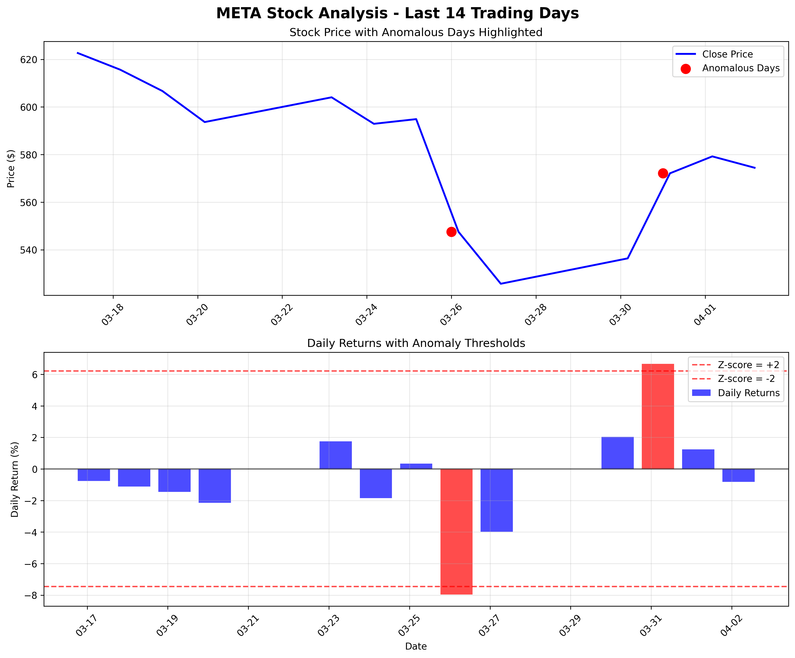

Date Range: 2026-03-17 to 2026-04-02
Analysis Date: 2026-04-03 13:01:46
Standard Deviation of Returns: 3.42%
Min Daily Return: -7.96%
Max Daily Return: 6.67%
The following trading days were identified as anomalous (Z-score > 2 or < -2):
| Date | Daily Return | Z-Score | Close Price | Volume | Type |
|---|---|---|---|---|---|
| 2026-03-26 | -7.96% | -2.15 | $547.54 | 35,780,100 | Negative |
| 2026-03-31 | 6.67% | 2.13 | $572.13 | 32,898,300 | Positive |

Chart showing stock price and daily returns with anomalous days highlighted
This analysis uses Z-score normalization to identify anomalous trading days: